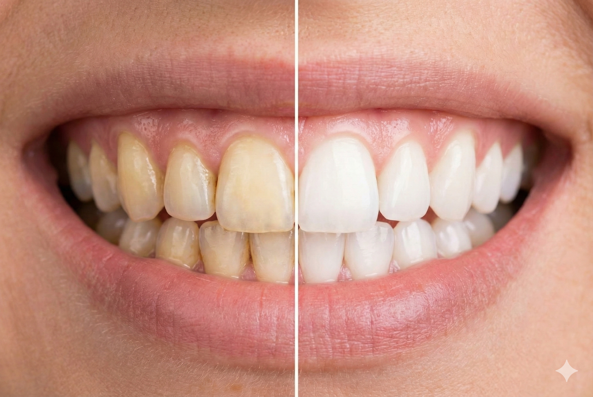

Teeth Whitening
Wear a beautiful smile everyday.

Lighten Your Natural Smile
Tooth whitening is a method to lighten the natural colour of teeth without removing the tooth surface. It doesn't make a complete colour change but may lighten the existing shade.
Reasons for Teeth Whitening
Everyone tends to be different and hence just like skin and hair, variations in the shade of teeth are common as well. Teeth can darken for several reasons:
-
Age
Teeth tend to naturally darken as we age.
-
Food & Drink
Staining from tea, coffee, red wine, and blackcurrant is common.
-
Smoking
This causes severe staining and discolouration of teeth.
-
Other Factors
Certain antibiotics or tiny tooth cracks can also lead to discoloured shades.
What Does Tooth Whitening Involve?
Professional bleaching is the most common method of tooth whitening. Your dental team will be able to tell you if you are suitable for the treatment, and will supervise it. The ‘active ingredient' used in the teeth whitening product is usually hydrogen peroxide or carbamide peroxide. As the active ingredient is broken down, oxygen gets into the enamel on the teeth and the tooth colour is made lighter.
We Use Boutique Whitening
We are proud to use the award-winning Boutique Whitening system, which provides a safe, effective, and comfortable way to achieve a brighter smile from the comfort of your own home.
Learn more at Boutique WhiteningTreatment Timeline & Results
Treatment Time
2-3
Weeks
Important Information
Potential Side Effects
The following symptoms are usually temporary and disappear within days. Please report any continued side effects to your dentist.
- Cold sensitivity to teeth during/after treatment.
- Gum discomfort, sore throat, or white gum patches.
Eligibility for Teeth Whitening
Your dentist will check your suitability during your initial consultation. Key eligibility criteria include:
- You must be 18 or over.
- Your teeth and gums must be healthy.
- Treatment should be delayed if you are pregnant or breastfeeding.
Be aware that teeth whitening will not lighten the colour of any crowns, veneers, bridges or dentures.
Teeth Whitening Aftercare
Follow these steps to maintain your new smile:
- Regular brushing with fluoride toothpaste twice daily.
- Daily flossing.
- Regular hygienist visits for scale and polish.
- Reduce or quit smoking.
- Cutting back on foods that stain teeth such as coffee and red wine.
- Use top-up kits as recommended by your dentist.
Have Questions?
For further information, please ask the dental team.
Ask Our Team Visit Boutique Whitening FAQ